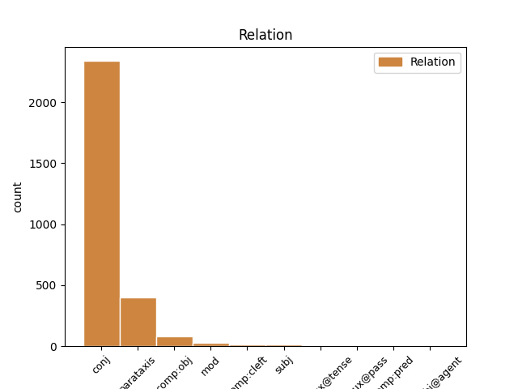
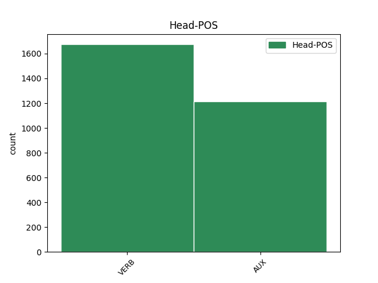
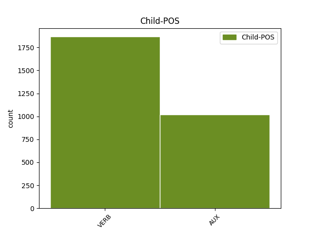

Distribution of features within this leaf



Agreement Rules sorted by frequency.
1 La _ _ _ _ 0 _ _ _
2 population _ _ _ _ 0 _ _ _
3 est être AUX _ Mood=Ind|Number=Sing|Person=3|Tense=Pres|VerbForm=Fin 0 _ _ _
4 alors _ _ _ _ 0 _ _ _
5 indigène _ _ _ _ 0 _ _ _
6 et _ _ _ _ 0 _ _ _
7 fait faire VERB _ Mood=Ind|Number=Sing|Person=3|Tense=Pres|VerbForm=Fin 3 conj _ _
8 partie _ _ _ _ 0 _ _ _
9 de _ _ _ _ 0 _ _ _
10 les _ _ _ _ 0 _ _ _
11 Nearchi _ _ _ _ 0 _ _ _
12 , _ _ _ _ 0 _ _ _
13 peuple _ _ _ _ 0 _ _ _
14 établi _ _ _ _ 0 _ _ _
15 sur _ _ _ _ 0 _ _ _
16 une _ _ _ _ 0 _ _ _
17 partie _ _ _ _ 0 _ _ _
18 de _ _ _ _ 0 _ _ _
19 la _ _ _ _ 0 _ _ _
20 Crau _ _ _ _ 0 _ _ _
21 et _ _ _ _ 0 _ _ _
22 de _ _ _ _ 0 _ _ _
23 les _ _ _ _ 0 _ _ _
24 Alpilles _ _ _ _ 0 _ _ _
25 . _ _ _ _ 0 _ _ _
Disagree Examples:
1 Cela _ _ _ _ 0 _ _ _
2 explique _ _ _ _ 0 _ _ _
3 que _ _ _ _ 0 _ _ _
4 l' _ _ _ _ 0 _ _ _
5 utilisateur _ _ _ _ 0 _ _ _
6 ne _ _ _ _ 0 _ _ _
7 dispose disposer VERB _ Mood=Sub|Number=Sing|Person=3|Tense=Pres|VerbForm=Fin 0 _ _ _
8 que _ _ _ _ 0 _ _ _
9 de _ _ _ _ 0 _ _ _
10 trois _ _ _ _ 0 _ _ _
11 « _ _ _ _ 0 _ _ _
12 vitesses _ _ _ _ 0 _ _ _
13 » _ _ _ _ 0 _ _ _
14 ( _ _ _ _ 0 _ _ _
15 un _ _ _ _ 0 _ _ _
16 seul _ _ _ _ 0 _ _ _
17 plateau _ _ _ _ 0 _ _ _
18 , _ _ _ _ 0 _ _ _
19 pignon _ _ _ _ 0 _ _ _
20 à _ _ _ _ 0 _ _ _
21 trois _ _ _ _ 0 _ _ _
22 positions _ _ _ _ 0 _ _ _
23 ) _ _ _ _ 0 _ _ _
24 et _ _ _ _ 0 _ _ _
25 peinera peiner VERB _ Mood=Ind|Number=Sing|Person=3|Tense=Fut|VerbForm=Fin 7 conj _ _
26 à _ _ _ _ 0 _ _ _
27 escalader _ _ _ _ 0 _ _ _
28 les _ _ _ _ 0 _ _ _
29 pentes _ _ _ _ 0 _ _ _
30 de _ _ _ _ 0 _ _ _
31 Montjuïc _ _ _ _ 0 _ _ _
32 ou _ _ _ _ 0 _ _ _
33 de _ _ _ _ 0 _ _ _
34 le _ _ _ _ 0 _ _ _
35 Tibidabo _ _ _ _ 0 _ _ _
36 . _ _ _ _ 0 _ _ _
1 L' _ _ _ _ 0 _ _ _
2 Association _ _ _ _ 0 _ _ _
3 de _ _ _ _ 0 _ _ _
4 la _ _ _ _ 0 _ _ _
5 noblesse _ _ _ _ 0 _ _ _
6 européenne _ _ _ _ 0 _ _ _
7 représente _ _ _ _ 0 _ _ _
8 les _ _ _ _ 0 _ _ _
9 intérêts _ _ _ _ 0 _ _ _
10 de _ _ _ _ 0 _ _ _
11 la _ _ _ _ 0 _ _ _
12 noblesse _ _ _ _ 0 _ _ _
13 européenne _ _ _ _ 0 _ _ _
14 auprès _ _ _ _ 0 _ _ _
15 de _ _ _ _ 0 _ _ _
16 toutes _ _ _ _ 0 _ _ _
17 personnes _ _ _ _ 0 _ _ _
18 physiques _ _ _ _ 0 _ _ _
19 ou _ _ _ _ 0 _ _ _
20 morales _ _ _ _ 0 _ _ _
21 , _ _ _ _ 0 _ _ _
22 institutions _ _ _ _ 0 _ _ _
23 , _ _ _ _ 0 _ _ _
24 instances _ _ _ _ 0 _ _ _
25 , _ _ _ _ 0 _ _ _
26 autorités _ _ _ _ 0 _ _ _
27 , _ _ _ _ 0 _ _ _
28 tribunaux _ _ _ _ 0 _ _ _
29 situés _ _ _ _ 0 _ _ _
30 sur _ _ _ _ 0 _ _ _
31 le _ _ _ _ 0 _ _ _
32 territoire _ _ _ _ 0 _ _ _
33 de _ _ _ _ 0 _ _ _
34 l' _ _ _ _ 0 _ _ _
35 Union _ _ _ _ 0 _ _ _
36 européenne _ _ _ _ 0 _ _ _
37 , _ _ _ _ 0 _ _ _
38 qui _ _ _ _ 0 _ _ _
39 ont avoir VERB _ Mood=Ind|Number=Plur|Person=3|Tense=Pres|VerbForm=Fin 0 _ _ _
40 ou _ _ _ _ 0 _ _ _
41 auraient avoir VERB _ Mood=Cnd|Number=Plur|Person=3|Tense=Pres|VerbForm=Fin 39 conj _ _
42 à _ _ _ _ 0 _ _ _
43 traiter _ _ _ _ 0 _ _ _
44 de _ _ _ _ 0 _ _ _
45 questions _ _ _ _ 0 _ _ _
46 relatives _ _ _ _ 0 _ _ _
47 à _ _ _ _ 0 _ _ _
48 le _ _ _ _ 0 _ _ _
49 statut _ _ _ _ 0 _ _ _
50 et _ _ _ _ 0 _ _ _
51 / _ _ _ _ 0 _ _ _
52 ou _ _ _ _ 0 _ _ _
53 à _ _ _ _ 0 _ _ _
54 le _ _ _ _ 0 _ _ _
55 rôle _ _ _ _ 0 _ _ _
56 de _ _ _ _ 0 _ _ _
57 la _ _ _ _ 0 _ _ _
58 noblesse _ _ _ _ 0 _ _ _
59 européenne _ _ _ _ 0 _ _ _
60 et _ _ _ _ 0 _ _ _
61 de _ _ _ _ 0 _ _ _
62 ses _ _ _ _ 0 _ _ _
63 membres _ _ _ _ 0 _ _ _
64 . _ _ _ _ 0 _ _ _
1 L' _ _ _ _ 0 _ _ _
2 origine _ _ _ _ 0 _ _ _
3 de _ _ _ _ 0 _ _ _
4 le _ _ _ _ 0 _ _ _
5 nom _ _ _ _ 0 _ _ _
6 est être AUX _ Mood=Ind|Number=Sing|Person=3|Tense=Pres|VerbForm=Fin 0 _ _ _
7 discuté _ _ _ _ 0 _ _ _
8 et _ _ _ _ 0 _ _ _
9 il _ _ _ _ 0 _ _ _
10 semblerait sembler VERB _ Mood=Cnd|Number=Sing|Person=3|Tense=Pres|VerbForm=Fin 6 conj _ SpaceAfter=No
11 , _ _ _ _ 0 _ _ _
12 selon _ _ _ _ 0 _ _ _
13 toute _ _ _ _ 0 _ _ _
14 vraisemblance _ _ _ _ 0 _ _ _
15 , _ _ _ _ 0 _ _ _
16 que _ _ _ _ 0 _ _ _
17 Berthmar _ _ _ _ 0 _ _ _
18 , _ _ _ _ 0 _ _ _
19 un _ _ _ _ 0 _ _ _
20 chef _ _ _ _ 0 _ _ _
21 d' _ _ _ _ 0 _ _ _
22 origine _ _ _ _ 0 _ _ _
23 nordique _ _ _ _ 0 _ _ _
24 ait _ _ _ _ 0 _ _ _
25 donné _ _ _ _ 0 _ _ _
26 le _ _ _ _ 0 _ _ _
27 nom _ _ _ _ 0 _ _ _
28 de _ _ _ _ 0 _ _ _
29 Villebetmer _ _ _ _ 0 _ _ _
30 et _ _ _ _ 0 _ _ _
31 sous _ _ _ _ 0 _ _ _
32 la _ _ _ _ 0 _ _ _
33 forme _ _ _ _ 0 _ _ _
34 latinisée _ _ _ _ 0 _ _ _
35 , _ _ _ _ 0 _ _ _
36 Villebremarius _ _ _ _ 0 _ _ _
37 . _ _ _ _ 0 _ _ _
1 " _ _ _ _ 0 _ _ _
2 Les _ _ _ _ 0 _ _ _
3 mesures _ _ _ _ 0 _ _ _
4 annoncées _ _ _ _ 0 _ _ _
5 devraient devoir VERB _ Mood=Cnd|Number=Plur|Person=3|Tense=Pres|VerbForm=Fin 37 comp:obj _ _
6 rapporter _ _ _ _ 0 _ _ _
7 autour _ _ _ _ 0 _ _ _
8 de _ _ _ _ 0 _ _ _
9 6,6 _ _ _ _ 0 _ _ _
10 milliards _ _ _ _ 0 _ _ _
11 d' _ _ _ _ 0 _ _ _
12 euros _ _ _ _ 0 _ _ _
13 à _ _ _ _ 0 _ _ _
14 l' _ _ _ _ 0 _ _ _
15 Etat _ _ _ _ 0 _ _ _
16 sur _ _ _ _ 0 _ _ _
17 les _ _ _ _ 0 _ _ _
18 deux _ _ _ _ 0 _ _ _
19 prochaines _ _ _ _ 0 _ _ _
20 années _ _ _ _ 0 _ _ _
21 , _ _ _ _ 0 _ _ _
22 puis _ _ _ _ 0 _ _ _
23 l' _ _ _ _ 0 _ _ _
24 effet _ _ _ _ 0 _ _ _
25 s' _ _ _ _ 0 _ _ _
26 épuisera _ _ _ _ 0 _ _ _
27 rapidement _ _ _ _ 0 _ _ _
28 à _ _ _ _ 0 _ _ _
29 1,1 _ _ _ _ 0 _ _ _
30 milliard _ _ _ _ 0 _ _ _
31 de _ _ _ _ 0 _ _ _
32 recettes _ _ _ _ 0 _ _ _
33 par _ _ _ _ 0 _ _ _
34 an _ _ _ _ 0 _ _ _
35 " _ _ _ _ 0 _ _ _
36 , _ _ _ _ 0 _ _ _
37 relèvent relever VERB _ Mood=Ind|Number=Plur|Person=3|Tense=Pres|VerbForm=Fin 0 _ _ _
38 les _ _ _ _ 0 _ _ _
39 économistes _ _ _ _ 0 _ _ _
40 d' _ _ _ _ 0 _ _ _
41 Exane _ _ _ _ 0 _ _ _
42 BNP _ _ _ _ 0 _ _ _
43 Paribas _ _ _ _ 0 _ _ _
44 dans _ _ _ _ 0 _ _ _
45 une _ _ _ _ 0 _ _ _
46 note _ _ _ _ 0 _ _ _
47 publiée _ _ _ _ 0 _ _ _
48 mardi _ _ _ _ 0 _ _ _
49 . _ _ _ _ 0 _ _ _
1 " _ _ _ _ 0 _ _ _
2 Les _ _ _ _ 0 _ _ _
3 mesures _ _ _ _ 0 _ _ _
4 annoncées _ _ _ _ 0 _ _ _
5 devraient devoir VERB _ Mood=Cnd|Number=Plur|Person=3|Tense=Pres|VerbForm=Fin 0 _ _ _
6 rapporter _ _ _ _ 0 _ _ _
7 autour _ _ _ _ 0 _ _ _
8 de _ _ _ _ 0 _ _ _
9 6,6 _ _ _ _ 0 _ _ _
10 milliards _ _ _ _ 0 _ _ _
11 d' _ _ _ _ 0 _ _ _
12 euros _ _ _ _ 0 _ _ _
13 à _ _ _ _ 0 _ _ _
14 l' _ _ _ _ 0 _ _ _
15 Etat _ _ _ _ 0 _ _ _
16 sur _ _ _ _ 0 _ _ _
17 les _ _ _ _ 0 _ _ _
18 deux _ _ _ _ 0 _ _ _
19 prochaines _ _ _ _ 0 _ _ _
20 années _ _ _ _ 0 _ _ _
21 , _ _ _ _ 0 _ _ _
22 puis _ _ _ _ 0 _ _ _
23 l' _ _ _ _ 0 _ _ _
24 effet _ _ _ _ 0 _ _ _
25 s' _ _ _ _ 0 _ _ _
26 épuisera épuiser VERB _ Mood=Ind|Number=Sing|Person=3|Tense=Fut|VerbForm=Fin 5 conj _ _
27 rapidement _ _ _ _ 0 _ _ _
28 à _ _ _ _ 0 _ _ _
29 1,1 _ _ _ _ 0 _ _ _
30 milliard _ _ _ _ 0 _ _ _
31 de _ _ _ _ 0 _ _ _
32 recettes _ _ _ _ 0 _ _ _
33 par _ _ _ _ 0 _ _ _
34 an _ _ _ _ 0 _ _ _
35 " _ _ _ _ 0 _ _ _
36 , _ _ _ _ 0 _ _ _
37 relèvent _ _ _ _ 0 _ _ _
38 les _ _ _ _ 0 _ _ _
39 économistes _ _ _ _ 0 _ _ _
40 d' _ _ _ _ 0 _ _ _
41 Exane _ _ _ _ 0 _ _ _
42 BNP _ _ _ _ 0 _ _ _
43 Paribas _ _ _ _ 0 _ _ _
44 dans _ _ _ _ 0 _ _ _
45 une _ _ _ _ 0 _ _ _
46 note _ _ _ _ 0 _ _ _
47 publiée _ _ _ _ 0 _ _ _
48 mardi _ _ _ _ 0 _ _ _
49 . _ _ _ _ 0 _ _ _